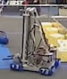
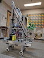
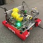
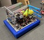
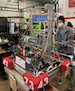
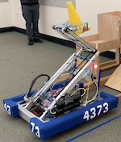

It was my pleasure to be a mentor for the AFS robotics team ("Roobotics") for six seasons. My older son joined the team in ninth grade and soon thereafter I was drawn into the fray. While he focused on software, I lent my mechanical aptitude and project management experience mostly on the hardware side, coaching students through the design, build, and testing phases. It was a wonderful mix of strategic thinking (about the annual game rules, design choices, and resource management) and practical tasks (fabrication, integration, and organization). There were endless opportunities to model problem-solving methods, teach the safe usage of power tools, reinforce engineering theory in real life, and of course practice constructive group dynamics. Veterans graduated, new members joined, and the pandemic precluded two years of competition, but this six year arc was one of continual improvement, culminating in the team advancing to the World Championships in 2023.
 2017-2018: The team starting using CAD to a very limited degree; mostly this robot was built sequentially and reactively.
 2018-2019: Much more planning and a complete CAD model christened a new era... but change is hard!
 2019-2020: The first year we truly designed the robot completely before we started to build it. Plus, CNC and swerve drive!
 2020-2021: Due to COVID cancelling the previous season, this was an iterative design that also never saw competition.
 2021-2022: Finally a year with comprehensive project management and actual matches, the team advanced to District Championships.
 2022-2023: Another banner year, employing best practices and lessons from prior years. The team advanced to World Championships!